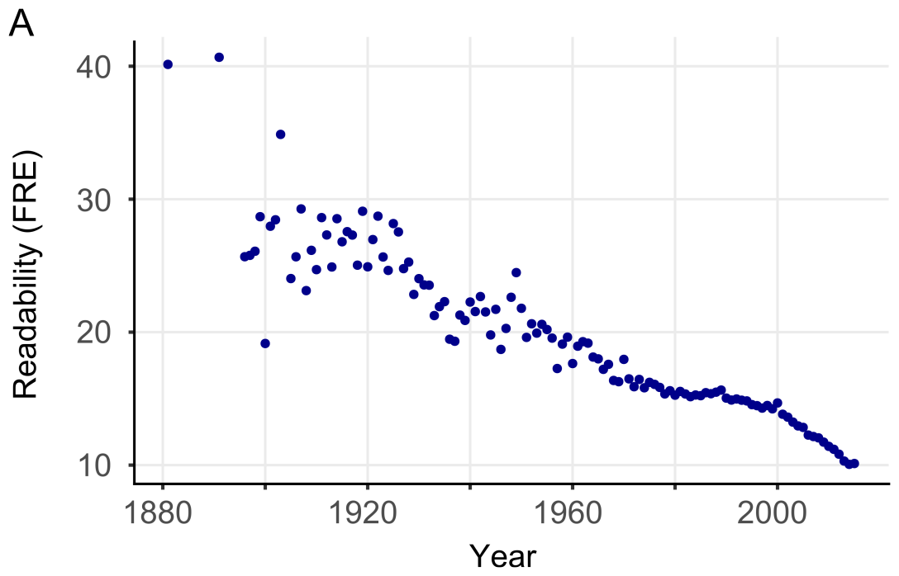
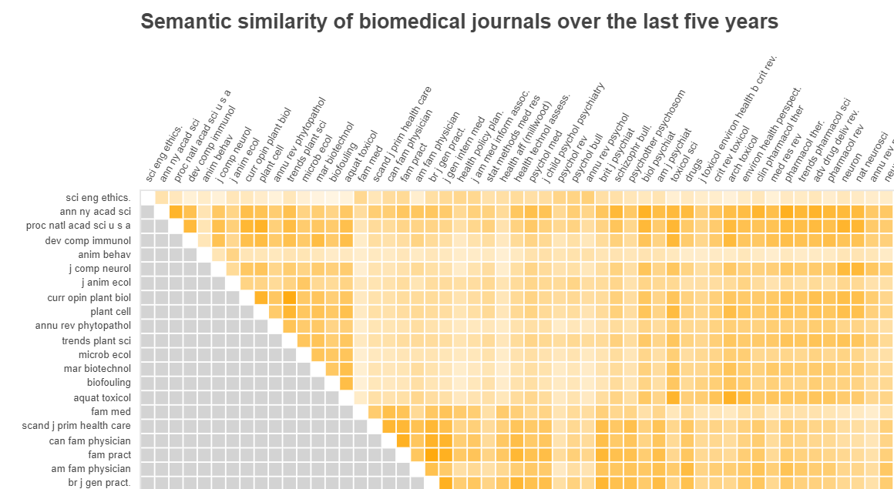
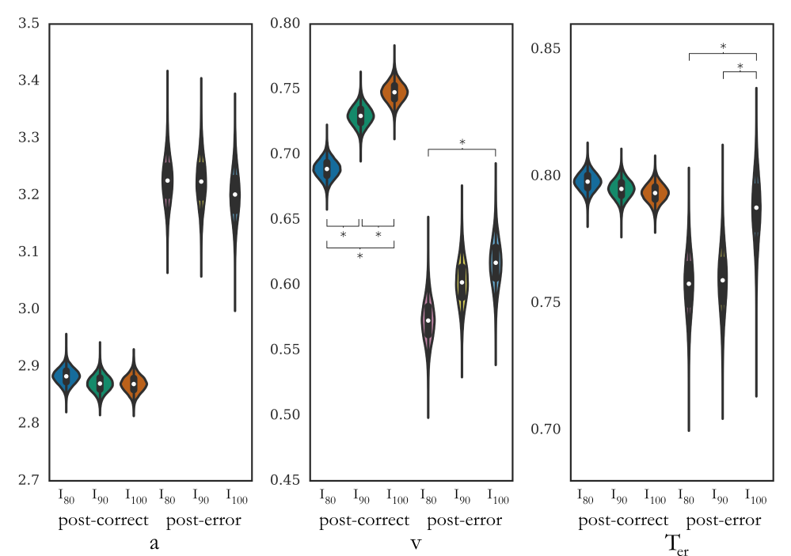
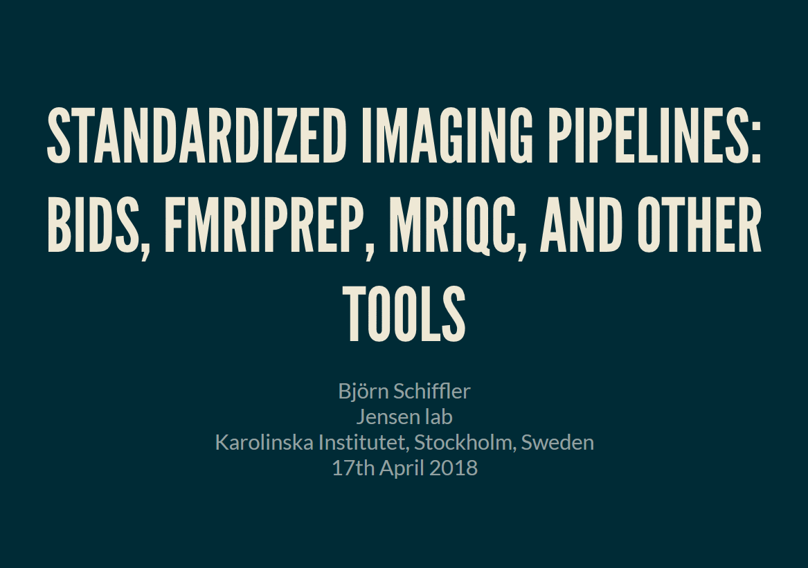

Welcome to my personal homepage! I'm currently employed as a senior data scientist at Combient MIX in Stockholm, Sweden.
At Combient MIX, we are using state-of-the-art ML tools to help companies in our Combient family with their data science challenges.
I have a passion for data analysis with Python and R and in my spare time enjoy travelling, playing tennis and chess and listening to post-rock.
Recent Projects

Readability of scientific texts
In a dataset of over 700,000 scientific abstracts from 1881 to 2015, we have found that the readability of scientific texts is steadily declining.
Our article was published in the open access journal eLife and was covered in international media (see e.g., Nature News and The Wire) as well as various blogs (e.g., Neuroskeptic).
All the source code to reproduce the analyses in the published article is available in this Github repository.

Semantic similarity of scientific journals
Based on the abstracts we have obtained from 123 scientific journals I have used the cortical.io API to construct a semantic fingerprint for each journal and built an interactive comparison matrix using Bokeh in Python.
More information on this project and a Jupyter notebook with the source code can be found in this Github repository.

Modelling of latent decision processes based on reaction times and accuracy
In my PhD I have been using computational models such as Reinforcement Learning and Drift Diffusion models in combination with neuroimaging analyses to make inferences about the decision processes underlying adaptation to errors.
Results from these studies are described for example in these two articles with an emphasis on Drift Diffusion modelling and Reinforcement Learning modelling

Standardized neuroimaging preprocessing with Docker/Singularity containers using BIDS tools
During my time as a post-doc at KI I've built up an fMRI preprocessing and quality control pipeline based on Singularity/Docker containers for large-scale analysis of dynamic functional connectivity in chronic pain.
Here are links to a high level tutorial and a more in-depth step by step guide.
{kind=link}
{kind=link}